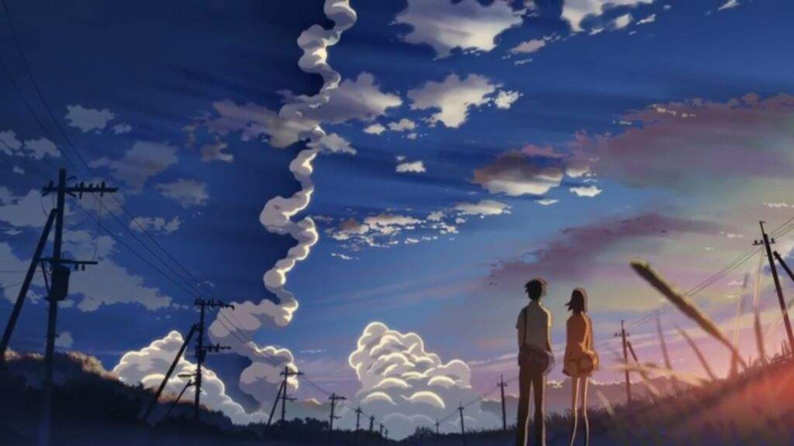

5 сантиметров в секунду

Такаки и его подруга Акари мечтали после окончания начальной школы поступить вместе в одну среднюю школу. Но, из-за переезда родителей, этим планам не суждено было сбыться. Расстояние в десятки километров — гигантское для ребенка и совсем небольшое — для взрослого… но умение преодолевать расстояния не всегда помогает преодолеть растущую пропасть между людьми.
Добавлен трейлер на русском языке
HTML [ 84 line ]
CSS [ общий ]
HTML [ 84 line ]
CSS [ общий ]
